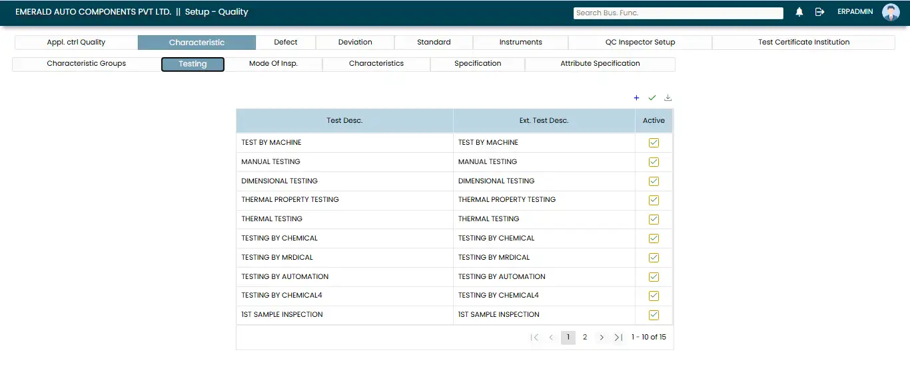

<div data-category="Quality control Management" data-title="Testing" data-updated="December 01, 2025" data-contributors="RoadmapIT" data-breadcrumb="Home,Quality control Management,Testing">
  <div class="page-content">
    <p>
      The Quality Testing can be defined in this screen. Testing parameters can be added, modified, and disabled as required.
    </p>

    <h5>Navigation path:</h5>
    <p class="fs-6">Quality Control \ Setup \ Setup - Quality</p>

    <!-- Create Testing -->
    
    <ul style="list-style-type: none; align-content: center">
      <li class="mouse-icon">Click the add icon to create a new Testing record.</li>
      <li class="mouse-icon">Enter the Test Description.</li>
      <li class="mouse-icon">Enter the External Test Description.</li>
      <li class="mouse-icon">
        Click
        <i class="bi bi-check-lg fs-4 mx-1 text-success"></i>
        to save.
      </li>
    </ul>

    <!-- Modify Testing -->
    <h2>Modify Testing:</h2>
    <ul style="list-style-type: none; align-content: center">
      <li class="mouse-icon">Select the required Testing record.</li>
      <li class="mouse-icon">Make the necessary changes.</li>
      <li class="mouse-icon">
        Click
        <i class="bi bi-check-lg fs-4 mx-1 text-success"></i>
        to save.
      </li>
    </ul>

    <!-- Disable Testing -->
    <h2>Disable Testing:</h2>
    <ul style="list-style-type: none; align-content: center">
      <li class="mouse-icon">Only unused Testing records can be disabled.</li>
      <li class="mouse-icon">Query the Testing record.</li>
      <li class="mouse-icon">Disable the Active flag.</li>
    </ul>
  </div>
</div>